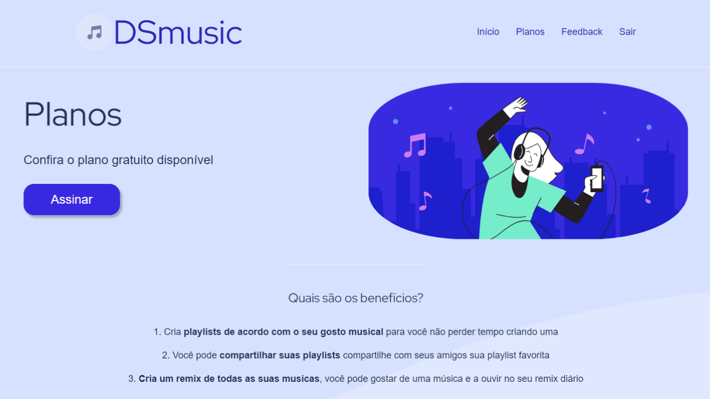
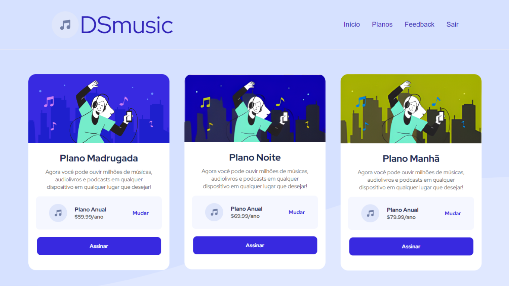

Finalidade do Projeto

DSmusic foi um projeto acadêmico de minha autoria, desenvolvido com o intuito de ser um programa de música, onde o usuário pode navegar pelo site e escutar suas músicas, o site também conta com a parte de planos de música, onde o usuário pode escolher qual plano se encaixa mais com ele, de acordo com a finalidade que esteja buscando, todos os valores apresentados são fictícios e apenas servem como ilustração. Além disso, o site conta com a parte de feedback, caso o usuário necessite de algum suporte.
Tecnologias Utilizadas
O projeto do DSmusic, foi criado com diversas tecnologias, que contribuiram para gerar o resultado final. para o design inicial dos componentes foi utilizado o Canva, já para o design da Web, foi utilizado HTML e CSS para estilização e composição dos elementos do site. Além disso, a parte de criação de banco de dados e manipulação dos dados foi desenvolvida pelo XAMPP utilizando MySql para criar a base de dados e o servidor local, já a manipulação de dados, foi realizada utilizando PHP como linguagem programação.
Considerações Finais
Com o resultado final, o trabalho desenvolvido alcançou o que era esperado de início. Além disso, o projeto contribuiu para o meu autoaprendizado e forleceu minhas habilidade como Desenvolvedor Web, Front-End e Back-End.